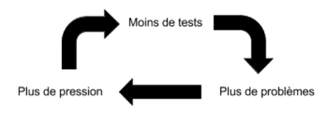
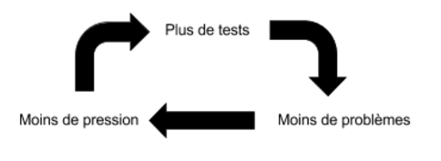

LES TESTS, CONTRE VENTS ET MARÉES
May 04, 2016
Connaissez vous la bernache nonnette ?
Il s’agit d’une espèce d’oie vivant principalement dans les îles arctiques. La bernache est exclusivement végétarienne, et ce dès sa naissance. Le problème, c’est qu’elle a pour habitude de nicher au sommet d’une falaise pour se protéger elle et ses œufs des prédateurs terrestres. Les oisillons ne sachant pas voler avant l’âge de 40-45 jours, il faut que ceux-ci puissent descendre de la falaise pour se nourrir.
UN GRAND SAUT
Pour ce faire, les parents se placent en bas la falaise et appellent leurs petits jusqu’à ce que ceux-ci, guidés par leur instinct, se décident à sauter dans le vide. La chute est pour le moins impressionnante, parfois sur plus d’une centaine de mètres avec un éboulis en contre bas. Malheureusement tous n’y survivent pas, certains font une mauvaise réception, d’autres continuent à dévaler la pente avant de s’arrêter. Les rescapés sont quant a eux sonnés pendant quelques temps, ce qui relève déjà de l’exploit compte tenu de l’impact auquel ils viennent de résister.
Replaçons nous maintenant dans un contexte de développement logiciel. Vous êtes un développeur travaillant sur un projet professionnel. Votre manager / client (rayez la mention inutile) a une influence préjudiciable, en effet il vous pousse à produire rapidement en négligeant les bonnes pratiques. Qu’allez vous faire ?
Avancer sur un projet sans bonnes pratiques, c’est comme sauter dans le vide quand on ne sait pas voler : vous ne maîtriserez rien, vous vous contenterez de subir (je reviens sur ce point plus bas). Avec de la chance vous en viendrez tout de même à bout, mais dans tous les cas cela se fera dans la douleur.
UNE PROGRESSION MAÎTRISÉE
Je suis un développeur passionné, qui éprouve un réel plaisir à produire des applications de qualité. J’ai donc énormément de mal à m’imaginer être obligé de sacrifier mes bonnes pratiques au nom d’une soi-disant productivité.
Il y en a une qui, selon moi, doit être utilisée pour n’importe quel projet : les tests unitaires. L’application du TDD associé à un processus d’intégration continue me semble indispensable. Le but est simple : les développeurs ont un feedback le plus rapide possible à chaque opération menée sur le code source. Cela permet de maîtriser le périmètre de l’application au fil de son développement, et ainsi de le faire évoluer sans dégrader l’existant.
Pour faire un parallèle avec notre bernache, utiliser les tests unitaires revient à choisir la cage d’escalier plutôt que la chute libre sans parachute. Vous descendez la falaise palier par palier, avec des états intermédiaires stables. Cette solution est beaucoup moins douloureuse pour tout le monde..
Oui, vous étiez déjà convaincus, mais pourtant vous ne le faites pas. Je vous vois venir…
MES MANAGERS NE VEULENT PAS DES TESTS
On ne va pas se mentir, les miens n’étaient pas convaincus non plus, ils ont fini par changer d’avis. Mais finalement, pourquoi ?
“Parce qu’écrire les tests ça fait perdre de temps.”
On a tous déjà entendu quelqu’un tenir un discours de ce genre. Il peut vous sembler absurde, mais il a réellement du sens pour celui qui le prononce. En fait ces personnes n’ont pas toujours conscience des problématiques d’une équipe de développement. Un logiciel se résume pour eux à des fonctionnalités qu’il faut implémenter en évitant au maximum les anomalies. Ils ne voient que la partie émergée de l’iceberg, vouloir travailler avec des tests peut donc ressembler à un “caprice de développeur”.
| Valeur | Visible | Invisible |
|---|---|---|
| Positive | Feature | Architecture |
| Négative | Bug | Code legacy |
Contrairement à ces personnes, si vous souhaitez travailler avec des tests, c’est que vous avez compris les véritables enjeux de telles pratiques. Vous avez conscience qu’une bonne architecture vous permet d’avancer de manière efficace, en conservant une souplesse de travail et une facilité à maintenir l’existant. A l’inverse, plus le code legacy s’installe dans votre projet, plus votre travail va devenir complexe, et par conséquent vos taches vont devenir de plus en plus longues.
En fait, si vous souhaitez faire accepter les tests à des personnes qui n’en veulent pas, il faut leurs faire comprendre l’influence du code legacy.
LE CODE LEGACY
Pour faire court, le code legacy est du code qui n’est pas testé, que vous ne comprenez pas et/ou dont vous ne maîtrisez pas les effets de bord. Un de mes collègues le définit aussi comme le code que l’on a peur de modifier.
On peut voir mes pierres comme un legacy, l’équilibre de la structure est des plus précaire. A la moindre modification que vous allez tenter, vous ajouterez un peu plus de legacy à celui que vous subissez déjà, tout en risquant de voir le l’ensemble s’effondrer. Plus grave encore, vous ne serez pas capable de mesurer les effets de bord produits par vos modifications. Vos développements seront donc de plus en plus longs, de plus en plus difficiles et source de plus d’anomalies. Vous subissez véritablement votre projet, vous êtes pris dans un cercle vicieux.

C’est pourquoi l’argument “les tests ça coûte du temps” n’est pas recevable. Oui, pris de manière isolée, un test a un coût. Mais nous les écrivons pour valider des comportements et protéger notre code contre les régressions. Si vous écrivez des tests, vous vous affranchirez donc du code legacy puisque vous maîtriserez ce qui est codé. Cela vous donne également la possibilité de faire du refactoring.
LE REFACTORING
Encore un gros mot qui fait peur à votre manager. Pourtant le refactoring est essentiel dans la vie d’un projet, surtout si vous souhaitez tendre vers une meilleure architecture.
Le refactoring, c’est comme le code du boy scout. Si je vais camper quelque part, alors je m’assure de laisser cet endroit propre en le quittant. Je ramasse donc mes déchets, mais aussi ceux des gens qui sont passés avant moi. Dans une application, le but est donc de toujours rendre le code plus lisible, l’architecture plus souple, le modèle plus explicite… Le comportement du code que je vais modifier étant protégé par les tests, je peux faire mes modifications sans risque de régression.
Tous les refactoring n’impliquent pas des modifications majeures, en fait, c’est même le contraire. Il peut s’agir d’actions très simples comme renommer une propriété, supprimer une dépendance inutile, etc. On parle généralement de micro-refactorings, ils prennent peu de temps s’ils sont menés tout au long du projet, de manière complètement informelle, dés qu’une opportunité se présente.
Un refactoring majeur implique généralement une évolution d’un concept clé dans l’architecture. Elle se fait soit pour répondre à une évolution du métier, soit pour éliminer un problème de conception. Ils ne sont donc pas systématiques.
L’application des tests est donc vertueux pour un projet. Il vous permet de ne pas souffrir du code legacy et vous donne également les moyens d’améliorer votre architecture. Vous gagnez en temps et en qualité !

MON CLIENT NE VEUT PAS PAYER POUR DES TESTS
Ce n’est pas bien grave puisque votre client a un besoin. Le logiciel qu’il vous demande doit y répondre, bien y répondre même puisque qu’il a une valeur ajoutée pour votre client. Finalement, la façon dont vous travaillez ne le concerne pas, alors pourquoi se contraindre avec ce qu’il veut ? S’il est soucieux de la qualité de son produit, vous pouvez valoriser vos pratiques. Dans le cas contraire, vous pouvez juste “omettre” d’en parler. D’autant plus que nous avons vu que les tests n’augmentent pas les coûts.
Si vous souhaitez tout de même lui faire accepter, alors faites lui voir le développement logiciel comme de l’artisanat : du Software Craftsmanship. Ce qui a du sens, on ne produit pas une application comme l’on produit une voiture sur une chaîne de production. Chaque projet est différent, on ne sait donc pas automatiser les développements, le facteur humain est par conséquent très important. Votre client paye pour une expertise qu’il n’a pas lui même. Il me semble donc aberrant qu’il puisse vous dicter la façon dont vous allez travailler.
On peut s’imaginer faire appel à un plombier pour réparer une fuite d’eau dans votre cuisine. Vous avez deux options :
- Pour payer moins cher, n’amenez pas vos outils, je vous fournirai les miens. Résultat, votre pauvre plombier se retrouve avec une clé de 12 et un vieux rouleau d’adhésif pour faire sa réparation. Étant mal équipé, il répare tant bien que mal votre fuite, ce qui lui demande plus de temps qu’à son habitude, et pour un résultat des plus douteux. Bref, la réparation ne tiendra pas et vous devrez faire refaire le travail deux semaines plus tard, ce qui va vous coûter cher.
- Vous lui faites confiance, après tout c’est un professionnel. Étant parfaitement équipé, le travail est rapidement réalisé et de qualité. Finalement vous n’entendrez plus parler de votre fuite d’eau. Vous avez payé la qualité du service.
N’importe qu’elle personne est capable de comprendre ceci, il suffit juste de le lui faire entendre.
Accepter des exigences de ce genre revient à se tirer une balle dans le pied. Votre travail ne sera pas de la qualité espérée, et votre client ira probablement voir chez la concurrence quand il aura à nouveau besoin d’une prestation informatique. A l’inverse, prôner la qualité vous fera peut-être perdre quelques clients proches de leur argent, mais vous assurera une image de marque grâce à une très grande majorité de vos clients satisfaits et fidélisés.
POUR CONCLURE
J’espère avoir donné quelques éléments pour expliquer l’intérêt des tests unitaires, aussi bien pour vous que pour votre entreprise et vos clients. Si malgré tout vous n’arrivez pas à convaincre, vous êtes toujours libre de passer outre, les résultats finiront par parler d’eux mêmes.
J’ai fait partie de l’équipe qui a introduit pour la première fois les tests unitaires dans mon entreprise. Ce sont les développeurs qui ont pris et porté cette décision. Finalement, le projet s’est révélé être un véritable succès, le suivant également. Les mentalités ont fini par changer, à tel point que tous les projets sont maintenant vendus en affichant clairement ces pratiques.
Enfin, Martin Fowler explique beaucoup mieux que moi tous ces enjeux, notamment au travers de l’intégration continue.
A vous de jouer !